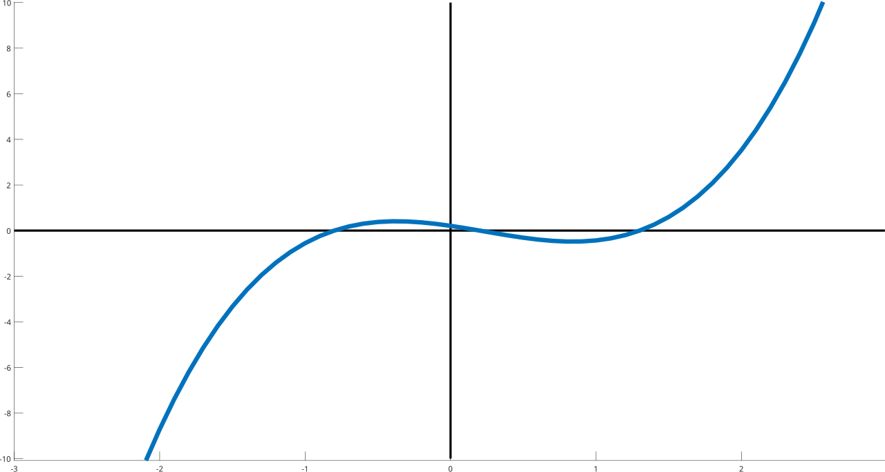
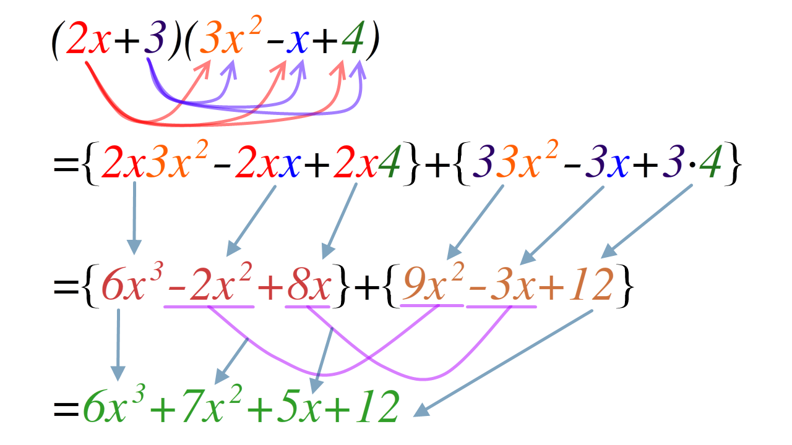
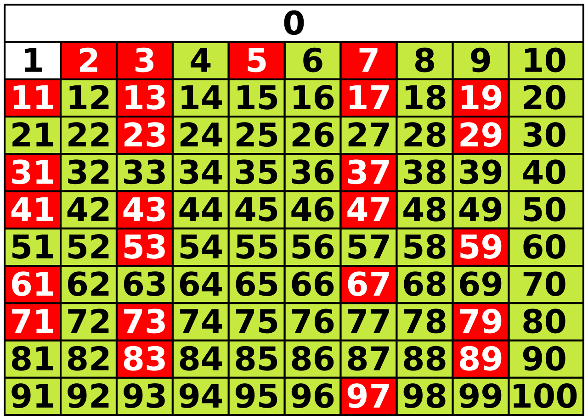
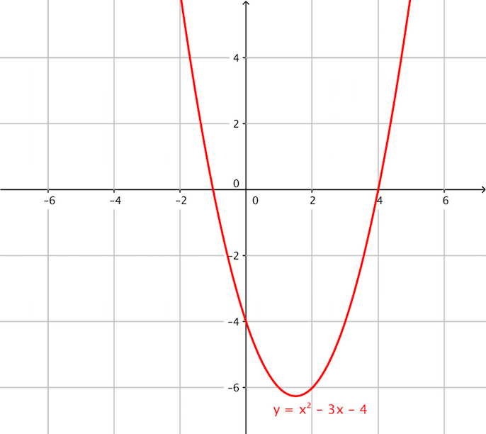
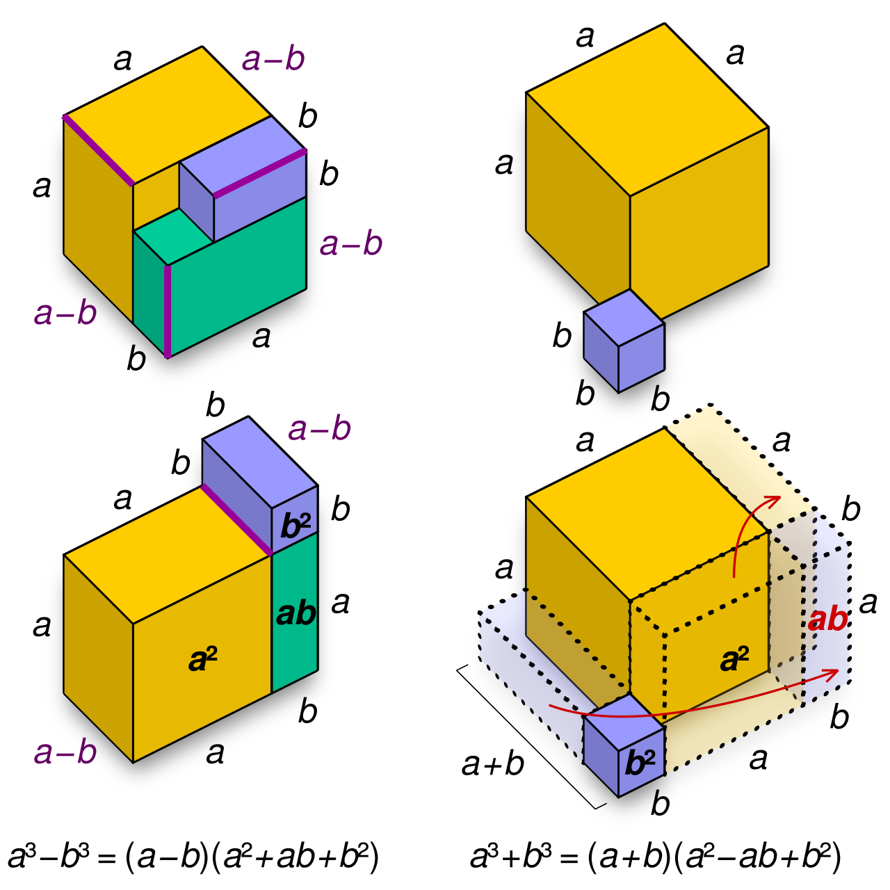

Polynomials & Factoring
A polynomial is nothing more exotic than a string of terms added together, each one a number multiplied by a variable raised to a whole-number power. You have been handling them since your first algebra class — 2x + 5 is one, and so is x2 − 3x − 4. This chapter teaches you to add them, subtract them, multiply them, and then — the part that makes people nervous — run the multiplication backward, which is called factoring. Factoring is a skill, not a talent: it is a short list of patterns you learn to recognize, tried in a fixed order, every single time. Work the examples with a pencil rather than reading them, and by the end of this chapter the list will feel automatic.
By the end of this chapter you can
- Decide whether an expression is a polynomial, and name it by its degree and by its number of terms.
- Write a polynomial in standard form and identify its leading coefficient and constant term.
- Add and subtract polynomials by combining like terms, distributing the subtraction correctly.
- Multiply polynomials with the distributive property, use FOIL on two binomials, and apply the three special product patterns.
- Factor out the greatest common factor and factor a four-term polynomial by grouping.
- Factor trinomials of the form ax2 + bx + c, including when a > 1, using the AC method.
- Recognize and factor a difference of squares, a perfect square trinomial, and a sum or difference of cubes.
- Check every factorization by multiplying back out, and state when a polynomial is prime.
Section 1Polynomials

What counts as a polynomial
A term is a number multiplied by one or more variables raised to powers: 7x3, −2x, and 15 are all terms. A polynomial is a sum of such terms where every exponent on a variable is a whole number (0, 1, 2, 3, …) and no variable ever sits in a denominator or under a radical. That last sentence is the whole definition, and it is worth memorizing, because the entire toolkit in this chapter only works on polynomials.
So 4x3 − x + 9 is a polynomial. But (3)/(x) is not, because (3)/(x) is really 3x−1 and −1 is not a whole number. Neither is √x, which is x1/2. Neither is 2x, where the variable is up in the exponent instead of down in the base. Those expressions are perfectly legal mathematics — they are just not polynomials, and the factoring patterns below do not apply to them.
The number multiplying a term is its coefficient. A term with no variable at all — a lone number — is the constant term. In 4x3 − x + 9, the coefficients are 4, −1, and 9, and 9 is the constant term. Notice that the coefficient of x is −1, not 1: the sign in front of a term belongs to that term. Half of all sign errors in algebra come from forgetting that one rule.
Degree, standard form, and names
The degree of a term is the exponent on its variable (or, if a term has several variables, the sum of the exponents: 5x2y3 has degree 2 + 3 = 5). The degree of the polynomial is the largest degree among its terms. A nonzero constant like 9 has degree 0, because 9 = 9x0.
A polynomial is in standard form when its terms are written from highest degree down to lowest. The coefficient of that first, highest-degree term is the leading coefficient. Rewriting 5 − 2x3 + x2 in standard form gives −2x3 + x2 + 5, so the degree is 3 and the leading coefficient is −2. Standard form is not fussiness for its own sake — it makes like terms line up, which is exactly what addition and subtraction need.
| Named by | Name | Meaning | Example |
|---|---|---|---|
| Terms | Monomial | One term | 7x3 |
| Terms | Binomial | Two terms | 2x − 9 |
| Terms | Trinomial | Three terms | x2 − 3x − 4 |
| Degree | Constant | Degree 0 | 12 |
| Degree | Linear | Degree 1 | 3x − 5 |
| Degree | Quadratic | Degree 2 | x2 − 3x − 4 |
| Degree | Cubic | Degree 3 | 2x3 + x − 1 |
| Degree | Quartic | Degree 4 | x4 − 81 |
Adding and subtracting: combine like terms
Like terms have exactly the same variable raised to exactly the same power. 3x2 and −8x2 are like terms; 3x2 and 3x3 are not. You combine like terms by adding their coefficients and keeping the variable part untouched, because that is just the distributive property in reverse: 3x2 − 8x2 = (3 − 8)x2 = −5x2.
Worked example — addition. Simplify (3x3 − 5x + 7) + (x3 + 4x2 − 2x − 9).
- Drop the parentheses. Because this is addition, nothing changes sign: 3x3 − 5x + 7 + x3 + 4x2 − 2x − 9.
- Collect the x3 terms. 3x3 + 1x3. Coefficients: 3 + 1 = 4. So 4x3.
- Collect the x2 terms. The first polynomial has none, so this is 0 + 4 = 4. So 4x2.
- Collect the x terms. −5x and −2x. Coefficients: −5 + (−2) = −7. So −7x.
- Collect the constants. 7 + (−9) = −2.
- Write in standard form. 4x3 + 4x2 − 7x − 2.
Worked example — subtraction. Simplify (4x2 − x + 6) − (2x2 + 5x − 3).
- Distribute the minus sign to every term inside the second parentheses. The minus sign is really −1 multiplying the whole group: −1(2x2) = −2x2, −1(+5x) = −5x, and −1(−3) = +3.
- Rewrite with no parentheses. 4x2 − x + 6 − 2x2 − 5x + 3.
- Combine x2 terms. 4 − 2 = 2, giving 2x2.
- Combine x terms. −1 − 5 = −6, giving −6x.
- Combine constants. 6 + 3 = 9.
- Answer. 2x2 − 6x + 9.
Notice that the third term went from −3 to +3. If you had written 6 − 3 = 3 there, you would have gotten 2x2 − 6x + 3, which is wrong. There is no partial credit from a graphing calculator, so build the habit now: a subtraction sign in front of a group flips every sign inside the group.
- A polynomial is a sum of terms with whole-number exponents on the variables — no variables in denominators, under radicals, or in exponents.
- The degree is the largest exponent (or largest sum of exponents in a term); standard form runs from highest degree to lowest.
- Combine only like terms — same variable, same exponent — by adding coefficients.
- Subtraction distributes a −1 to every term in the group being subtracted.
Section 2Multiplying polynomials

The one rule: everybody meets everybody
All polynomial multiplication is a single idea repeated: each term in the first factor multiplies each term in the second factor, and then you combine like terms. That is the distributive property, a(b + c) = ab + ac, applied as many times as needed. When you multiply the variable parts, remember the exponent rule xm · xn = xm+n — here the exponents do add.
Worked example — monomial times polynomial. Multiply 3x2(4x3 − 2x + 5).
- 3x2 · 4x3: coefficients 3 · 4 = 12; variables x2 · x3 = x2+3 = x5. Result: 12x5.
- 3x2 · (−2x): coefficients 3 · (−2) = −6; variables x2 · x1 = x3. Result: −6x3.
- 3x2 · 5 = 15x2.
- Answer. 12x5 − 6x3 + 15x2. No like terms to combine, since the degrees 5, 3, and 2 are all different.
FOIL: a nickname for one particular case
When both factors are binomials, "everybody meets everybody" produces exactly four products, and the mnemonic FOIL keeps you from missing one: First terms, Outer terms, Inner terms, Last terms. Understand that FOIL is not a separate rule — it is the distributive property with a name, and it only applies to two-term times two-term.
Worked example — FOIL. Multiply (2x + 3)(x − 5).
- First: 2x · x = 2x2.
- Outer: 2x · (−5) = −10x.
- Inner: 3 · x = 3x.
- Last: 3 · (−5) = −15.
- String them together. 2x2 − 10x + 3x − 15.
- Combine the middle terms. −10 + 3 = −7, so the answer is 2x2 − 7x − 15.
Worked example — binomial times trinomial. Multiply (x + 2)(x2 − 3x + 4). FOIL does not apply here — there are six products, not four — so distribute deliberately.
- Send x through the trinomial. x · x2 = x3; x · (−3x) = −3x2; x · 4 = 4x.
- Send 2 through the trinomial. 2 · x2 = 2x2; 2 · (−3x) = −6x; 2 · 4 = 8.
- Line up all six products. x3 − 3x2 + 4x + 2x2 − 6x + 8.
- x2 terms: −3 + 2 = −1, giving −x2. x terms: 4 − 6 = −2, giving −2x.
- Answer. x3 − x2 − 2x + 8.
Three special products worth memorizing
Three particular products come up so often — and are so useful read backward as factoring patterns in Section 5 — that you should know them cold rather than FOIL them out every time.
| Pattern | Result | Worked instance |
|---|---|---|
| Square of a sum | (a + b)2 = a2 + 2ab + b2 | (3x + 5)2 = 9x2 + 30x + 25 |
| Square of a difference | (a − b)2 = a2 − 2ab + b2 | (x − 6)2 = x2 − 12x + 36 |
| Sum times difference | (a + b)(a − b) = a2 − b2 | (4x − 7)(4x + 7) = 16x2 − 49 |
Worked example — verifying the first pattern. Expand (3x + 5)2 the long way to see where 2ab comes from. Write it as (3x + 5)(3x + 5) and FOIL: First, 3x · 3x = 9x2. Outer, 3x · 5 = 15x. Inner, 5 · 3x = 15x. Last, 5 · 5 = 25. Adding, 9x2 + 15x + 15x + 25 = 9x2 + 30x + 25. The Outer and Inner products are identical, which is precisely why the middle term is twice the product of the two pieces.
Worked example — why the middle vanishes. Expand (4x − 7)(4x + 7). First, 4x · 4x = 16x2. Outer, 4x · 7 = 28x. Inner, −7 · 4x = −28x. Last, −7 · 7 = −49. The middle terms are opposites: 28x − 28x = 0. What survives is 16x2 − 49.
- Multiplication means every term times every term, then combine like terms; exponents add when you multiply.
- FOIL is the distributive property applied to two binomials only — four products.
- Memorize (a ± b)2 = a2 ± 2ab + b2 and (a + b)(a − b) = a2 − b2.
- Squaring a binomial never just squares each piece — the 2ab middle term is always there.
Section 3Factoring out the GCF and by grouping

Factoring is multiplication run backward
To factor a polynomial is to write it as a product. You already know how to check your work perfectly: multiply the factors back out and see whether you land on what you started with. That check costs fifteen seconds and eliminates essentially all factoring errors, so do it every time.
Factoring matters because a product equal to zero gives you information a sum never can. If AB = 0, then A = 0 or B = 0 — the zero-product property — and that is how factored form turns into solutions in the next chapter. Factoring also lets you simplify fractions. One caution while you are here: when you cancel a common factor out of a rational expression, the excluded values do not disappear. For instance (x2 − 9)/(x − 3) = ((x − 3)(x + 3))/(x − 3) = x + 3, but only for x ≠ 3, because the original expression is undefined there.
Step one, every time: the greatest common factor
The greatest common factor (GCF) of a polynomial is the largest monomial that divides evenly into every term. Build it in two pieces: the greatest common factor of the coefficients, and each shared variable raised to the lowest power that appears anywhere in the polynomial. Pulling out the GCF is always the first move — before grouping, before trinomials, before anything — because it makes every later step smaller.
Worked example. Factor 12x4 − 18x3 + 30x2.
- GCF of the coefficients. Factors of 12: 1, 2, 3, 4, 6, 12. Factors of 18: 1, 2, 3, 6, 9, 18. Factors of 30: 1, 2, 3, 5, 6, 10, 15, 30. The largest number in all three lists is 6.
- GCF of the variables. The powers present are x4, x3, and x2. The lowest is x2.
- So the GCF is 6x2.
- Divide each term by 6x2. (12x4)/(6x2) = 2x2. (−18x3)/(6x2) = −3x. (30x2)/(6x2) = 5.
- Write the answer. 6x2(2x2 − 3x + 5).
- Check by distributing. 6x2 · 2x2 = 12x4; 6x2 · (−3x) = −18x3; 6x2 · 5 = 30x2. Matches the original.
When the leading coefficient is negative, it is usually worth pulling the negative out too. For −4x3 + 8x2 − 12x, take the GCF as −4x: (−4x3)/(−4x) = x2, (8x2)/(−4x) = −2x, and (−12x)/(−4x) = 3, so the factorization is −4x(x2 − 2x + 3). Every sign inside flipped, which is exactly what dividing by a negative does.
Four terms? Try grouping
When a polynomial has four terms and no GCF shared by all four, split it into two pairs, factor the GCF out of each pair separately, and hope the leftover parentheses match. If they do, that matching parenthesis is itself a common factor and you pull it out.
Worked example. Factor x3 + 5x2 + 3x + 15.
- Group into pairs. (x3 + 5x2) + (3x + 15).
- GCF of the first pair. x3 and 5x2 share x2. Factoring gives x2(x + 5).
- GCF of the second pair. 3x and 15 share 3. Factoring gives 3(x + 5).
- Compare the parentheses. Both are (x + 5) — the grouping worked. The expression is now x2(x + 5) + 3(x + 5).
- Pull out the common binomial. Treat (x + 5) as a single object: it appears once in each term, so factor it out and what remains is x2 + 3. Answer: (x + 5)(x2 + 3).
- Check. (x + 5)(x2 + 3) = x3 + 3x + 5x2 + 15 = x3 + 5x2 + 3x + 15. Correct.
Worked example with a negative in the middle. Factor 6x3 − 9x2 − 4x + 6.
- Group. (6x3 − 9x2) + (−4x + 6). Keep the sign with the term it belongs to.
- First pair. GCF is 3x2: (6x3)/(3x2) = 2x and (−9x2)/(3x2) = −3, giving 3x2(2x − 3).
- Second pair. If you factor out +2 you get 2(−2x + 3), which does not match. Factor out −2 instead: (−4x)/(−2) = 2x and (6)/(−2) = −3, giving −2(2x − 3). Now it matches.
- Combine. 3x2(2x − 3) − 2(2x − 3) = (2x − 3)(3x2 − 2).
- Check. (2x − 3)(3x2 − 2) = 6x3 − 4x − 9x2 + 6, which rearranges to 6x3 − 9x2 − 4x + 6. Correct.
| Number of terms | First try | Then try |
|---|---|---|
| Any count | Always factor out the GCF first | Continue with what is left inside |
| Two | Difference of squares | Sum or difference of cubes (Section 5) |
| Three | Perfect square trinomial | AC method / trial factors (Section 4) |
| Four | Grouping into two pairs | Regroup or rearrange the terms |
- Factoring writes a polynomial as a product; always check by multiplying back out.
- The GCF is the numeric GCF of the coefficients times each shared variable at its lowest power — pull it out first, every time.
- Dividing by a negative GCF flips every sign inside the remaining factor.
- Four terms suggests grouping: factor each pair, then pull out the matching binomial.
Section 4Factoring trinomials

The easy case: x2 + bx + c
When the leading coefficient is 1, factoring is a small puzzle: find two numbers whose product is c and whose sum is b. If those numbers are p and q, then x2 + bx + c = (x + p)(x + q). This works because FOIL on (x + p)(x + q) gives x2 + qx + px + pq = x2 + (p + q)x + pq.
Worked example. Factor x2 + 7x + 12.
- Target. Two numbers with product 12 and sum 7.
- List the factor pairs of 12. 1 and 12 (sum 13); 2 and 6 (sum 8); 3 and 4 (sum 7). Stop — 3 and 4 work.
- Write the factors. (x + 3)(x + 4).
- Check by FOIL. x2 + 4x + 3x + 12 = x2 + 7x + 12. Correct.
Worked example with negatives. Factor x2 − 3x − 28.
- Target. Product −28, sum −3. A negative product means the two numbers have opposite signs.
- List pairs multiplying to −28. 1 and −28 (sum −27); −1 and 28 (sum 27); 2 and −14 (sum −12); −2 and 14 (sum 12); 4 and −7 (sum −3). Found it: 4 and −7.
- Write the factors. (x + 4)(x − 7).
- Check. x2 − 7x + 4x − 28 = x2 − 3x − 28. Correct.
| Signs of b and c | Signs inside the factors | Example |
|---|---|---|
| c > 0, b > 0 | Both positive | x2 + 7x + 12 = (x + 3)(x + 4) |
| c > 0, b < 0 | Both negative | x2 − 7x + 12 = (x − 3)(x − 4) |
| c < 0 | Opposite signs; the larger absolute value carries the sign of b | x2 − 3x − 28 = (x + 4)(x − 7) |
The general case: ax2 + bx + c with a > 1
When a is not 1, guessing gets slow. The AC method (also called factoring by decomposition) converts the problem into a grouping problem, which you already know how to do. The recipe: multiply a · c, find two numbers whose product is a · c and whose sum is b, split the middle term into those two pieces, then factor by grouping.
Worked example. Factor 6x2 + 11x + 3.
- Identify. a = 6, b = 11, c = 3.
- Compute a · c. 6 · 3 = 18.
- Find two numbers with product 18 and sum 11. Pairs for 18: 1 and 18 (sum 19); 2 and 9 (sum 11). That is the pair.
- Split the middle term. 11x becomes 9x + 2x: 6x2 + 9x + 2x + 3.
- Group and factor each pair. (6x2 + 9x) + (2x + 3) = 3x(2x + 3) + 1(2x + 3).
- Pull out the common binomial. (2x + 3)(3x + 1).
- Check by FOIL. 6x2 + 2x + 9x + 3 = 6x2 + 11x + 3. Correct.
Step 5 hides a trap worth naming. The second pair, 2x + 3, has no common factor other than 1 — so you factor out 1, not nothing. Writing the invisible 1 is what makes the final step obvious.
Worked example with a negative c. Factor 10x2 − 11x − 6.
- Compute a · c. 10 · (−6) = −60.
- Find two numbers with product −60 and sum −11. Because the product is negative, the signs differ; because the sum is negative, the bigger piece is negative. Try −12 and 5 (sum −7); −15 and 4 (sum −11). That is the pair.
- Split the middle term. 10x2 − 15x + 4x − 6.
- Group. (10x2 − 15x) + (4x − 6) = 5x(2x − 3) + 2(2x − 3).
- Factor out the common binomial. (2x − 3)(5x + 2).
- Check. 10x2 + 4x − 15x − 6 = 10x2 − 11x − 6. Correct.
GCF first — and when nothing works
Worked example. Factor 4x2 + 22x + 30 completely.
- GCF check. 4, 22, and 30 are all even, and their GCF is 2. Factor it out: 2(2x2 + 11x + 15).
- AC on the inside. a · c = 2 · 15 = 30; two numbers with product 30 and sum 11 are 5 and 6.
- Split and group. 2x2 + 5x + 6x + 15 = x(2x + 5) + 3(2x + 5) = (2x + 5)(x + 3).
- Restore the GCF. 2(2x + 5)(x + 3).
- Check. (2x + 5)(x + 3) = 2x2 + 6x + 5x + 15 = 2x2 + 11x + 15; multiplying by 2 gives 4x2 + 22x + 30. Correct.
Had you skipped step 1, a · c would have been 4 · 30 = 120 and you would be hunting for factor pairs of 120. Pulling the GCF first turned that into factor pairs of 30. That is the whole reason the GCF comes first.
Finally, some trinomials simply do not factor over the integers. For x2 + x + 1 you would need two integers with product 1 and sum 1; the only integer pairs multiplying to 1 are 1 and 1 (sum 2) and −1 and −1 (sum −2). Neither gives 1, so the trinomial is prime. Prime is a legitimate final answer, not a sign that you did something wrong.
- For x2 + bx + c, find two numbers with product c and sum b.
- For ax2 + bx + c with a > 1, use the AC method: product a · c, sum b, split the middle term, then group.
- A negative c means the two numbers have opposite signs; the one with the larger absolute value carries the sign of b.
- Pull the GCF out first — it shrinks a · c dramatically — and remember that some trinomials are prime.
Section 5Special factoring patterns

Difference of squares
Read the special product (a + b)(a − b) = a2 − b2 from right to left and you have a factoring rule: a2 − b2 = (a + b)(a − b). To use it, confirm you have exactly two terms, that both are perfect squares, and that the sign between them is a minus.
Worked example. Factor 49x2 − 64.
- Is each term a perfect square? 49x2 = (7x)2 because 7 · 7 = 49 and x · x = x2. And 64 = 82. Yes.
- Name the pieces. a = 7x, b = 8.
- Apply the pattern. (7x + 8)(7x − 8).
- Check. First 49x2, Outer −56x, Inner +56x, Last −64. The middle terms cancel, leaving 49x2 − 64. Correct.
Worked example — GCF first, then the pattern. Factor 18x3 − 50x completely. The GCF of 18 and 50 is 2, and both terms contain x, so the GCF is 2x: 18x3 − 50x = 2x(9x2 − 25). Inside, 9x2 = (3x)2 and 25 = 52, so 9x2 − 25 = (3x + 5)(3x − 5). The complete factorization is 2x(3x + 5)(3x − 5). Without the GCF step, 18x3 − 50x is not a difference of squares at all — the exponent 3 is odd.
Worked example — apply it twice. Factor x4 − 81. Here x4 = (x2)2 and 81 = 92, so x4 − 81 = (x2 + 9)(x2 − 9). The second factor is itself a difference of squares: x2 − 9 = (x + 3)(x − 3). The first factor, x2 + 9, is a sum of squares and does not factor over the real numbers. Final answer: (x2 + 9)(x + 3)(x − 3).
Perfect square trinomials
Running the squaring patterns backward gives a2 + 2ab + b2 = (a + b)2 and a2 − 2ab + b2 = (a − b)2. Recognizing these saves time, but you must verify all three conditions: first term a perfect square, last term a perfect square (and positive), and middle term equal to twice the product of the two square roots.
Worked example. Factor 9x2 − 30x + 25.
- First term. 9x2 = (3x)2, so a = 3x.
- Last term. 25 = 52, so b = 5.
- Test the middle term. 2ab = 2 · 3x · 5 = 30x. The trinomial's middle term is −30x, which matches in size and tells you the sign inside is a minus.
- Answer. (3x − 5)2.
- Check. (3x − 5)(3x − 5) = 9x2 − 15x − 15x + 25 = 9x2 − 30x + 25. Correct.
A near miss shows why the middle-term test matters. Consider 9x2 − 20x + 25: the outer terms are still perfect squares, but 2ab = 30x ≠ 20x, so it is not a perfect square trinomial. Running the AC method on it, a · c = 225 and no integer pair multiplying to 225 sums to −20, so that trinomial is prime.
Sum and difference of cubes
These two are memorized, not derived on the spot:
- a3 + b3 = (a + b)(a2 − ab + b2)
- a3 − b3 = (a − b)(a2 + ab + b2)
The signs follow the mnemonic SOAP: Same (the binomial's sign matches the original), Opposite (the middle sign in the trinomial is the opposite), Always Positive (the last sign is always +). It also helps to know the small cubes by heart: 1, 8, 27, 64, 125, 216, 343, 512, 729, 1000.
Worked example — sum of cubes. Factor 8x3 + 27.
- Write both terms as cubes. 8x3 = (2x)3 because 23 = 8; and 27 = 33. So a = 2x and b = 3.
- Build the binomial (S: same sign). (a + b) = (2x + 3).
- Build the trinomial piece by piece. a2 = (2x)2 = 4x2; ab = 2x · 3 = 6x, and by SOAP the sign is opposite, so −6x; b2 = 32 = 9, always positive.
- Answer. (2x + 3)(4x2 − 6x + 9).
- Check by expanding. 2x(4x2 − 6x + 9) = 8x3 − 12x2 + 18x. Then 3(4x2 − 6x + 9) = 12x2 − 18x + 27. Adding: 8x3 + (−12 + 12)x2 + (18 − 18)x + 27 = 8x3 + 27. Correct — the two middle columns cancel, which is why the pattern works.
Worked example — difference of cubes. Factor 125x3 − 64.
- Write as cubes. 125x3 = (5x)3 since 53 = 125; 64 = 43. So a = 5x, b = 4.
- Binomial. (5x − 4).
- Trinomial. a2 = 25x2; ab = 5x · 4 = 20x, sign opposite the binomial's minus, so +20x; b2 = 16.
- Answer. (5x − 4)(25x2 + 20x + 16).
- Check. 5x(25x2 + 20x + 16) = 125x3 + 100x2 + 80x. And −4(25x2 + 20x + 16) = −100x2 − 80x − 64. Adding gives 125x3 − 64. Correct.
That trinomial factor, a2 ± ab + b2, essentially never factors further over the integers — note it is not a perfect square trinomial, because a perfect square would need a middle term of 2ab, not ab. Once you have applied the cubes pattern, you are done.
| Pattern | Factored form | Example |
|---|---|---|
| Difference of squares | a2 − b2 = (a + b)(a − b) | 49x2 − 64 = (7x + 8)(7x − 8) |
| Sum of squares | Prime over the real numbers | x2 + 9 does not factor |
| Perfect square (+) | a2 + 2ab + b2 = (a + b)2 | 16x2 + 56x + 49 = (4x + 7)2 |
| Perfect square (−) | a2 − 2ab + b2 = (a − b)2 | 9x2 − 30x + 25 = (3x − 5)2 |
| Sum of cubes | a3 + b3 = (a + b)(a2 − ab + b2) | 8x3 + 27 = (2x + 3)(4x2 − 6x + 9) |
| Difference of cubes | a3 − b3 = (a − b)(a2 + ab + b2) | 125x3 − 64 = (5x − 4)(25x2 + 20x + 16) |
- a2 − b2 = (a + b)(a − b); a sum of squares is prime over the reals.
- A perfect square trinomial requires the middle term to equal exactly 2ab — always test it.
- Cubes: SOAP — Same sign, Opposite sign, Always Positive.
- Pull the GCF first and then look again — a hidden pattern often appears, and sometimes you apply a pattern twice.
The chapter in one breath
- A polynomial is a sum of terms with whole-number exponents; its degree is the largest exponent and standard form runs highest to lowest.
- Add and subtract by combining like terms only, and distribute the minus sign to every term of a subtracted group.
- Multiply by sending every term of one factor through every term of the other; FOIL is that idea for two binomials.
- The special products (a ± b)2 = a2 ± 2ab + b2 and (a + b)(a − b) = a2 − b2 become the factoring patterns of Section 5 when read backward.
- Always factor out the GCF first; with four terms, try grouping into two pairs and pulling out the matching binomial.
- For trinomials, find two numbers with product c (or a · c when a > 1) and sum b; the AC method converts the hard case into a grouping problem.
- Know difference of squares, perfect square trinomials, and sum/difference of cubes on sight; a sum of squares is prime.
- Check every factorization by multiplying back out — and when you cancel a factor from a fraction, record the excluded value.
ReferenceWords worth knowing
A quick reference for the vocabulary in this chapter — skim it now, or circle back whenever a word trips you up.
- AC method
- A technique for factoring ax2 + bx + c: find two numbers with product a · c and sum b, split the middle term into those two pieces, then factor by grouping.
- Binomial
- A polynomial with exactly two terms, such as 3x − 7.
- Coefficient
- The numerical factor in a term, including its sign. In −5x3 the coefficient is −5.
- Constant term
- A term with no variable; equivalently, the term of degree 0.
- Degree of a polynomial
- The largest degree among all of its terms.
- Degree of a term
- The exponent on the variable, or the sum of the exponents when several variables appear.
- Difference of squares
- The pattern a2 − b2 = (a + b)(a − b).
- Distributive property
- The rule a(b + c) = ab + ac, which underlies all polynomial multiplication and all factoring.
- Factor
- As a noun, one of the expressions being multiplied; as a verb, to rewrite a sum as a product.
- Factoring by grouping
- Splitting a four-term polynomial into two pairs, factoring each pair, and then pulling out the shared binomial.
- FOIL
- A memory aid for multiplying two binomials: First, Outer, Inner, Last.
- Greatest common factor (GCF)
- The largest monomial dividing evenly into every term — the GCF of the coefficients times each shared variable at its lowest power.
- Leading coefficient
- The coefficient of the highest-degree term once the polynomial is in standard form.
- Like terms
- Terms with identical variables raised to identical powers; only like terms may be combined by addition.
- Monomial
- A polynomial with exactly one term, such as 6x4.
- Perfect square trinomial
- A trinomial of the form a2 ± 2ab + b2, which factors as (a ± b)2.
- Polynomial
- A sum of terms in which every variable exponent is a whole number and no variable appears in a denominator, under a radical, or in an exponent.
- Prime polynomial
- A polynomial that cannot be factored into lower-degree polynomials with integer coefficients, such as x2 + x + 1.
- Standard form
- A polynomial written with its terms in order from highest degree to lowest.
- Sum and difference of cubes
- The patterns a3 + b3 = (a + b)(a2 − ab + b2) and a3 − b3 = (a − b)(a2 + ab + b2).
- Term
- A single number, variable, or product of numbers and variables within a polynomial, together with the sign in front of it.
- Trinomial
- A polynomial with exactly three terms, such as x2 − 3x − 4.